Mooie nagels, zachte voeten.
Bij Beauty Deluxe kan je terecht voor nagelstyling van naturel tot nail art, en voor een pedicure die eelt, eeltpitten en ingegroeide nagels aanpakt. Met een luisterend oor en altijd een babbel erbij.
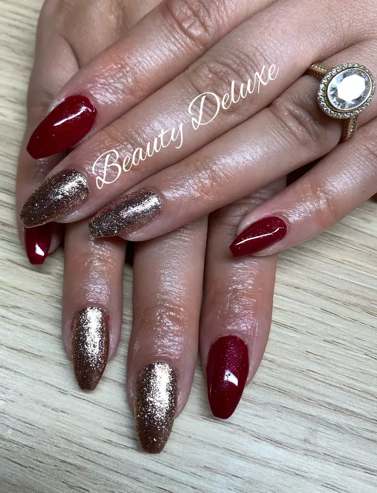
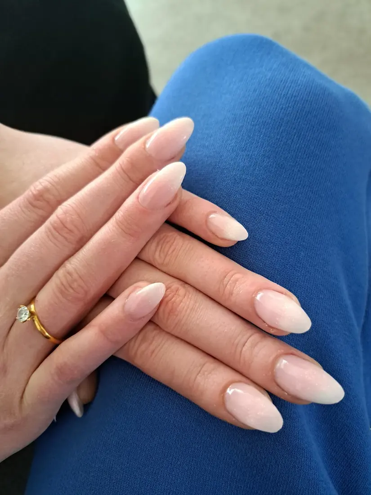
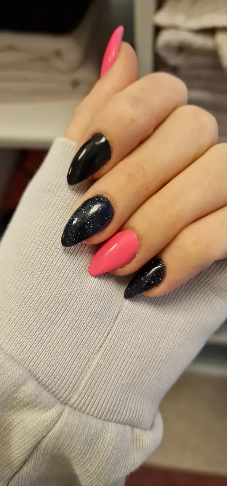
41 reviews op Google
Twee dingen, met zorg gedaan.
Je handen voor het oog, je voeten voor het gevoel. Bij Beauty Deluxe krijgen ze allebei aandacht.
Bewaar wat je mooi vindt.
Tik op het hartje bij je favorieten en stuur ze in één bericht door. Dan weet Jolien meteen wat je wil.
Nog niets bewaard. Tik op een hartje.
Stuur naar Jolien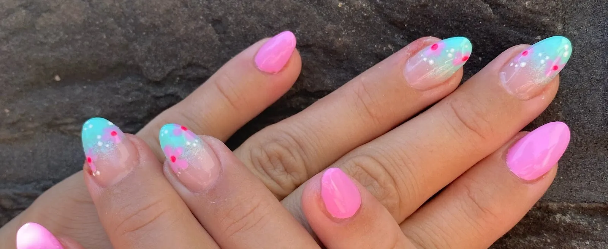
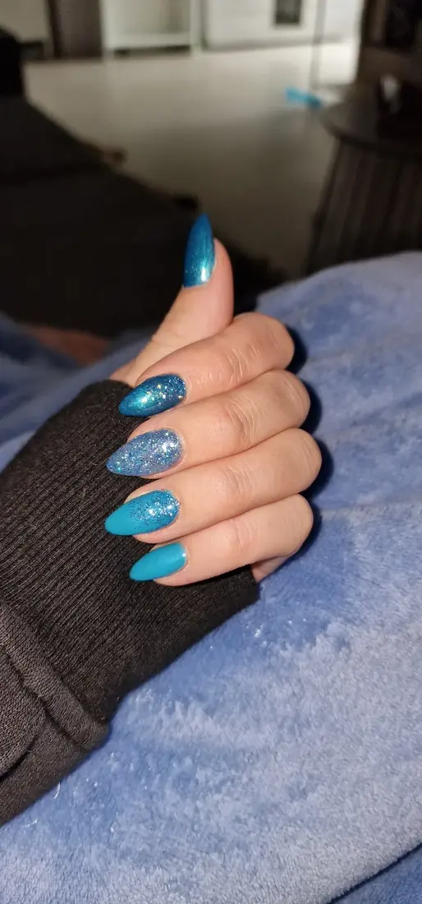
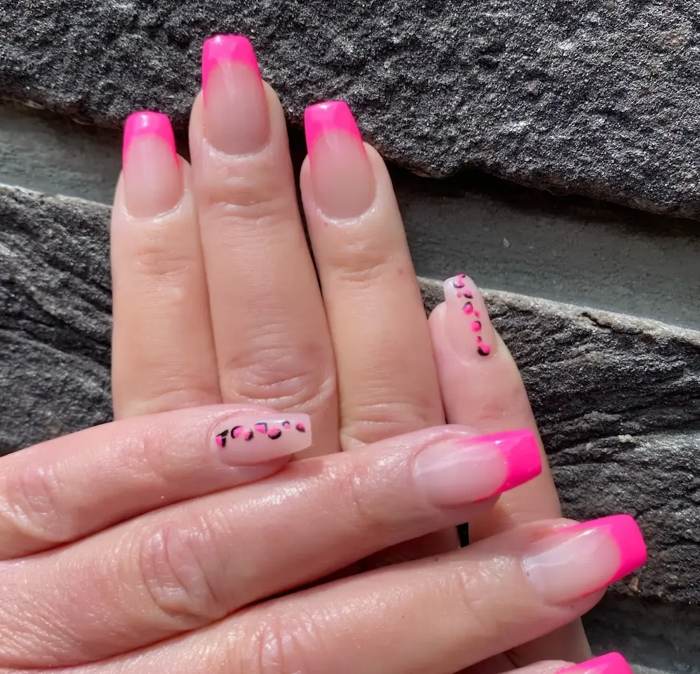
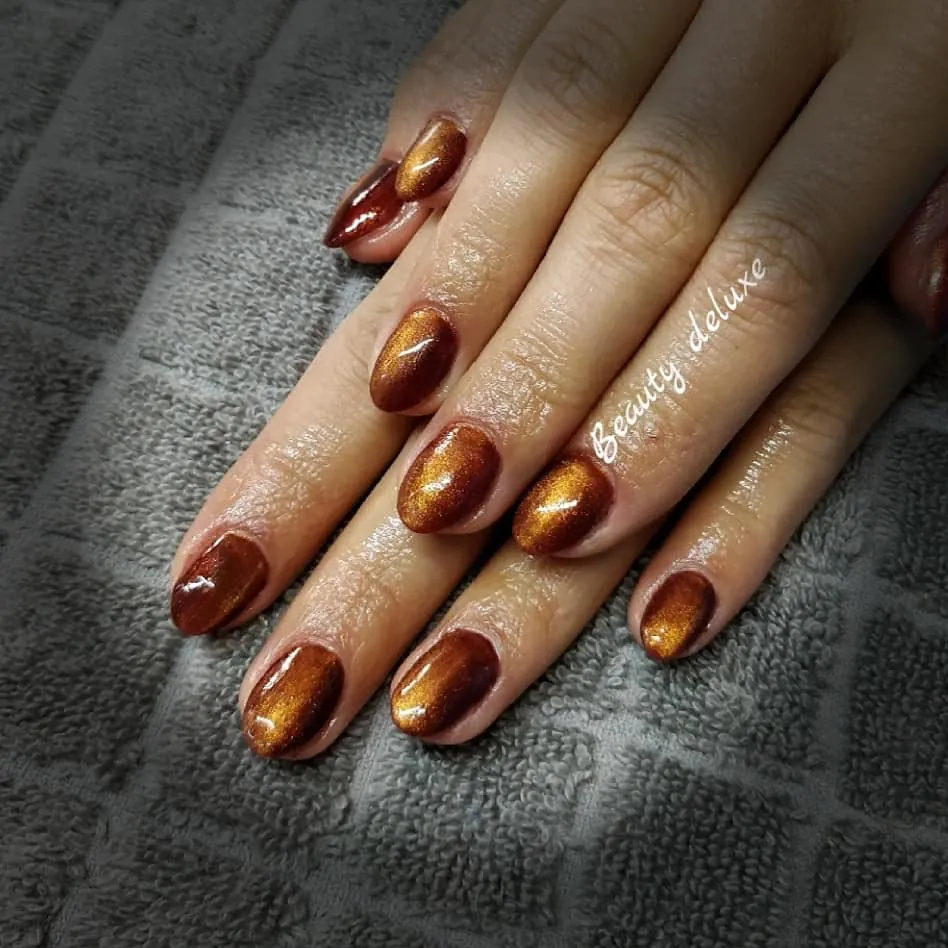
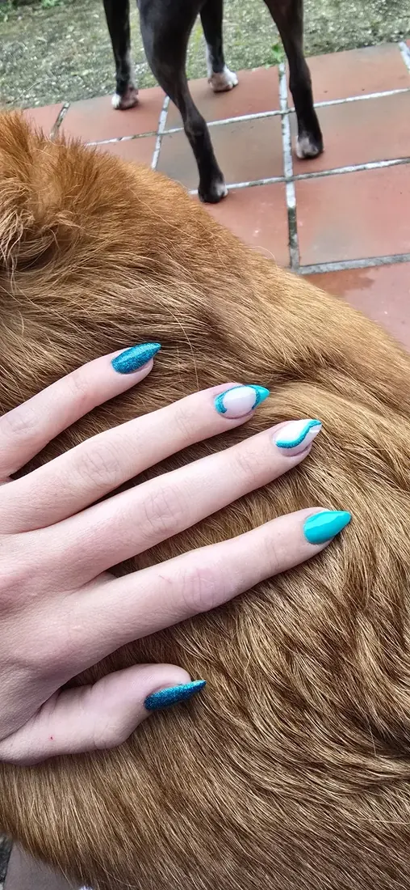
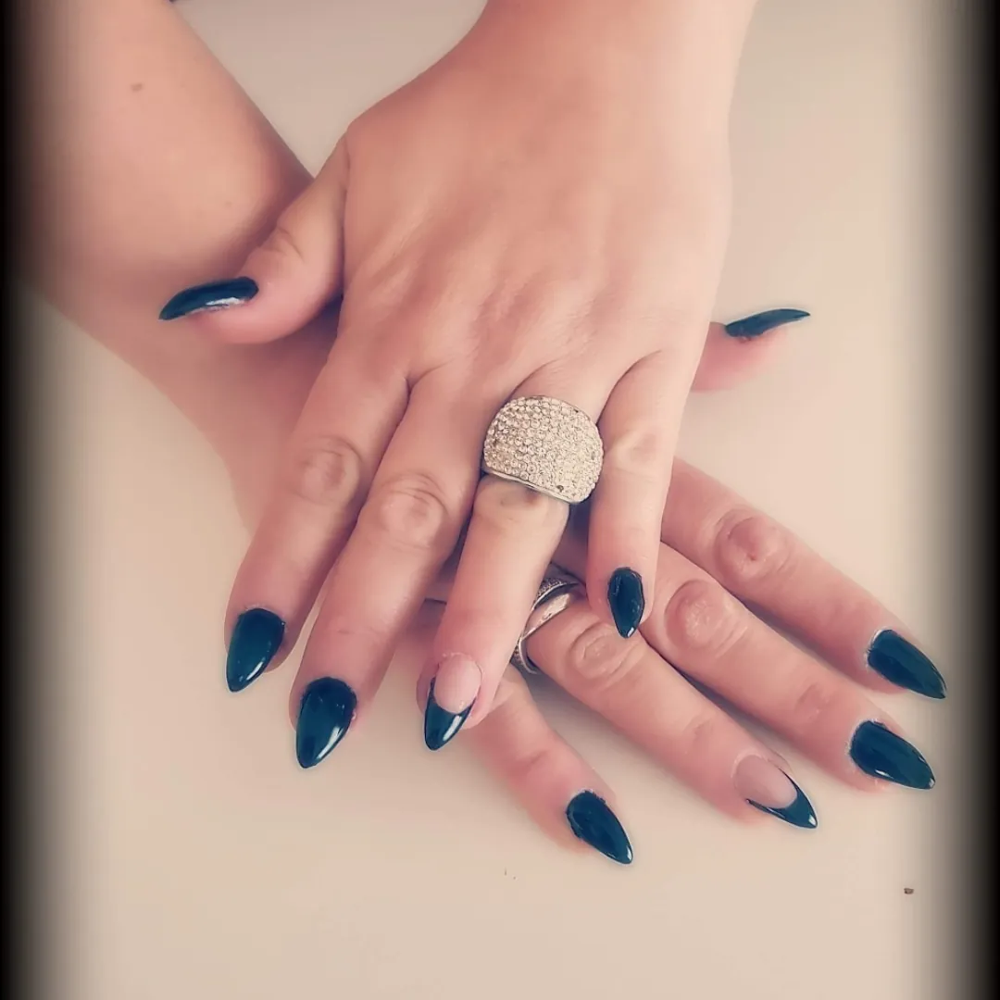
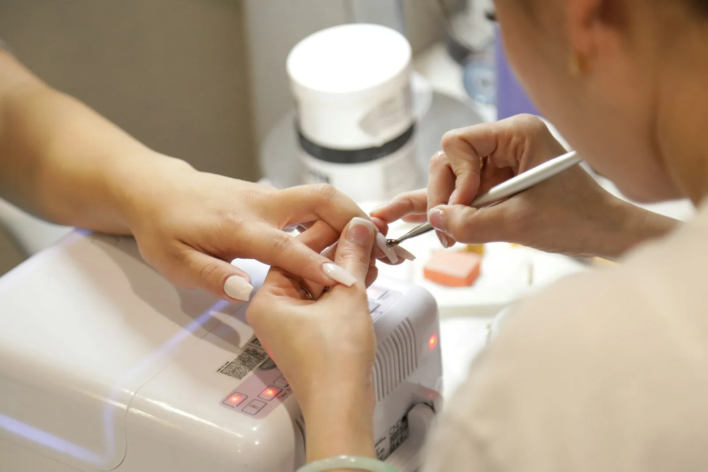
Van ingetogen tot opvallend.
Een klant noemde Jolien de beste nagelstyliste die ze ooit had. Kijk naar het werk hierboven en je snapt waarom. Neem gerust een foto mee van wat je mooi vindt.
Voeten die weer licht aanvoelen.
Een pedicure bij Jolien is meer dan nagels knippen. Ook vervelende plekjes worden aangepakt, op een rustige manier.
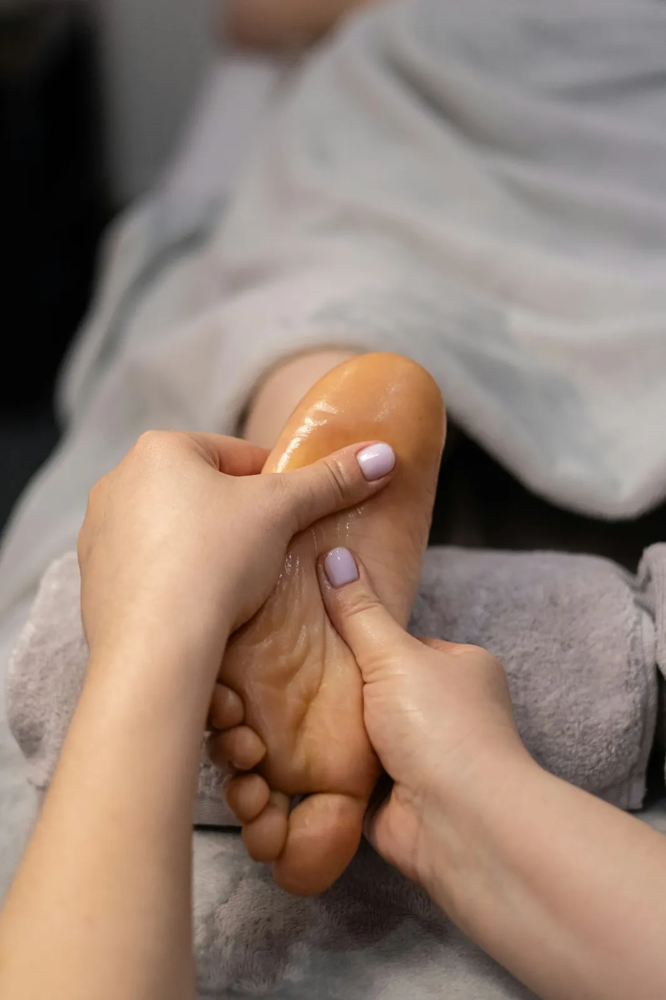
Vakwerk, met een luisterend oor.
Wie bij Jolien langskomt, gaat buiten met mooie nagels of zachte voeten. En vaak ook met een glimlach, want een babbel hoort erbij.
“Echt een aanrader als je op zoek bent naar iemand die niet alleen goeie kwaliteit levert, maar ook een luisterend oor tijdens je afspraak.”
Britt van den Eynden, op Google
Wat klanten vertellen.
41 reviews op Google
“Beste nagelstyliste die ik ooit gehad heb. Een uitgebreid pakket aan services.”
Britt van den Eyndenop Google“Elke keer weer word ik met de glimlach goed geholpen. Eeltpitten, ingegroeide nagels, eelt... het verdwijnt allemaal wreed snel. Een leuke babbel met een lach erbij.”
Louis Steijvenop Google“Super nagelstyliste, altijd vriendelijk en zo lief. Ik zou haar aan iedereen voorstellen.”
Jolien Gorisop GoogleOp afspraak
| Maandag | 09:00 - 19:00 |
| Dinsdag | 09:00 - 19:00 |
| Woensdag | 09:00 - 19:00 |
| Donderdag | 09:00 - 19:00 |
| Vrijdag | 09:00 - 19:00 |
| Zaterdag | 08:00 - 13:00 |
| Zondag | Gesloten |
Goed om te weten.
Hoe maak ik een afspraak?
Stuur een WhatsApp of bel naar 0497 36 56 96. Weet je al welke stijl je wil, bewaar je favorieten hierboven en stuur ze mee.
Kan ik ook last minute komen?
Heb je last van je voeten, bel dan gerust. Als het kan, word je snel geholpen.
Kan ik een foto meebrengen van wat ik wil?
Graag zelfs. Een foto zegt vaak meer dan een beschrijving.
Ben je ook op zaterdag open?
Ja, op zaterdag van 08:00 tot 13:00.